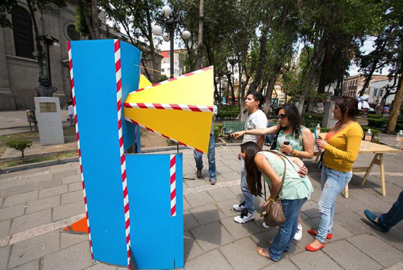
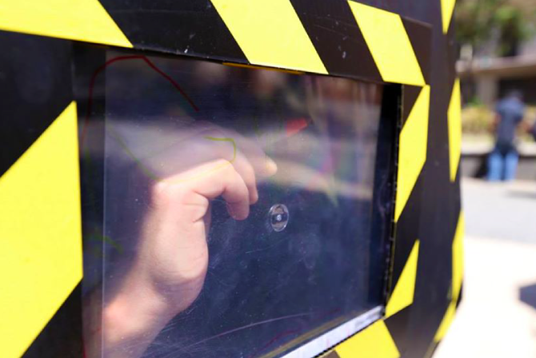
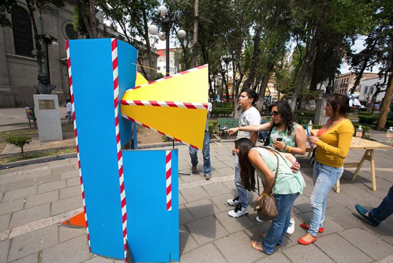
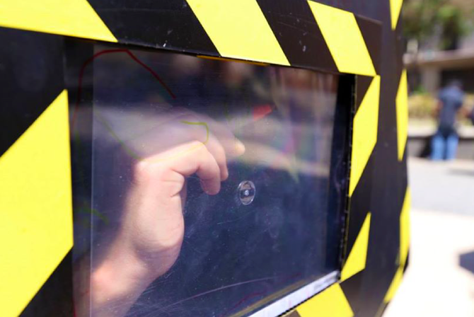

Urbanedros
The Urbanedros were created as result of an experimental workshop focused on urban observation gadgets, lectured by experimental designer Chris Woebken in Mexico City. The purpose of these objects is to give pedestrians a different viewpoint of the streets and create different isolated and enclosed spaces where senses are magnified, and monotonous or often unseen situations are analyzed and revealed under a new perspective.
At the same time, this devices serve as indicators that provide their users tools that augment their vision or audition and give them the opportunity to point out what they like or dislike on the urban landscape, in order to elaborate on new ideas and proposals for spaces and to experience an apparently monotonous or boring street under a new light. The collected data, simultaneously, can help the government design and define new urban strategies.
A family of Urbanedros was prototyped for Mexican urbanism festival Mextrópoli, and the objects were placed around different squares in the historical downtown to observe, test and evaluate the different reactions of pedestrians and participants that came across them unexpectedly. My collaboration to the group work was the exploration of ideas, the proposal of different analog and electrical components for their use on the Urbanedros, the development of the concept and the construction of the prototypes along with the other members of the interdisciplinary team.
- Collaborators: Valeria Hurtado, José Luis Araiza, Daniel Badillo, Alejandro Martínez
- Client: Workshop by Laboratorio para la Ciudad, Mexico City
- Date: 05/2014
- Website: Urbanedros